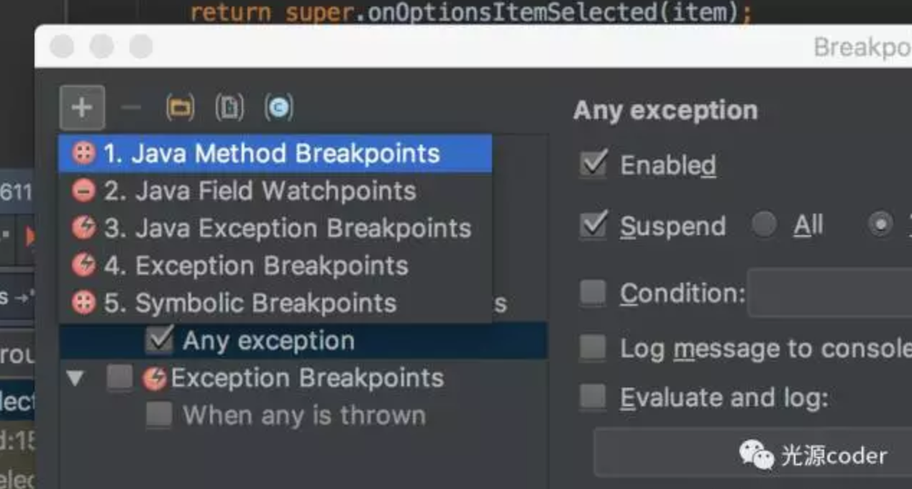

一、 进入 debug 模式的两种姿势
第一种是点击运行按钮旁边的“绿色甲虫”(debug app)开始以调试模式编译运行。
这个方式的特点是，一开始就进入了调试模式。适合希望尽早进入调试模式的场景，比如你想从头开始追踪问题，或者断点在启动页或首页之类的。它的弊端是每次需要从头跑一遍，且由于调试模式下应用程序略卡顿，等你到达调试页面时会觉得老费劲。

第二种方式是在手机或模拟器已经跑起来应用程序后点击 Run -> Attach debugger to Android process，选择应用程序主进程，即可进入调试模式。
这种方式的特点是，随时随地自由进入调试模式，不需要重头开始跑应用程序，该方式适合绝大多数调试场景。需要注意的是，假如跑的是 release 版本且有混淆加固之类的话，该方式就无法正常调试。
二、 常见的调试操作
1 典型的调试场景
一个最常见的调试场景如下：
- 完成包括打开 Android Studio、打开需要调试的类、连接手机等准备工作
- 在关键位置打上普通断点，进入调试模式后触发断点，将当前线程阻塞在断点处
- 单步调试，一行一行往下运行
- 碰到方法调用时进入方法内部
- 用单步调试单步执行直到该方法结束回到方法调用的下一行，或者直接退出当前方法
- 通过观察观察区的相关变量，推断出问题所在，结束本次调试
以上是最常规的 debug 场景，下面介绍下调试界面。

在 Android Studio 的 debug 标签（假如一开始没有，等触发断点后自然会出现）中有两个面板 debugger 和 console。debugger 又分为 Frames、Threads 和 Variables 三块，分别是堆栈内容、线程、变量区。
在 debugger 标签右边有一些操作按钮，是我们常用的调试操作，下面会一一介绍。（可以用鼠标悬停在上面看每个按钮的具体名称）
2 设置断点
断点有多种类型，我们这里先只谈普通断点。在每行的最前端单击一下即可添加断点，在断点上单击一下是取消断点。普通模式下断点只是一个普通的红点，但假如是在调试模式下，则红点上会有一个“√”或“✘”表示该行是否会被运行，例如，注释行前的断点会是“✘”。

不管怎样，触发断点肯定是调试的起点。只有触发了断点，才会开始阻塞线程（注意是只会阻塞当前线程，这个后面会扩展一下详细介绍），此时当前代码行会被蓝色高亮，观察面板上的变量也会显示当前环境下的值。
3 跳到下一个断点（F9）
一般情况下，在调试时我们可以根据我们的经验在几个关键的位置打上断点，这里就需要从一个断点直接跳到下一个断点。操作是继续以 debug 模式运行，快捷键是 F9（假如没改动的话应该都是这个快捷键，假如不同，可以把鼠标悬浮在该图标上看提示，下同）。
4 单步调试（F8）
触发断点后，我们当然可以通过加 N 个断点来定位问题，但在较复杂的场景里可能没法判断出关键点。这时可以在比较靠前的位置添加断点作为起点，一行一行执行。操作是单步调试，快捷键是 F8。
5 进入方法内部（F7）
在单步调试时方法调用语句会被看做一行，那么如何进入方法内部呢？用“进入内部”操作，快捷键是 F7.
6 退出当前方法（上档键+F8）
既然有进入方法内部，就有退出当前方法的操作。当进入某个方法内部后觉得该方法后面的代码不需要看了，不需要猛按 F8 让它们跑完，可以直接退出当前方法去到该方法调用处的下一行。
有了这些操作，基本可以应付常见的 80% 的调试场景了。但仅仅了解这些，在面对复杂场景时难免效率低下。下面介绍几种非常高效的断点。
三、 几种高效断点
1 条件成立时才触发的条件断点
普通断点在每次运行到时都会被触发，这在多次调用、有“循环”的场景会比较麻烦，比如循环 100 次只希望停留在第 98 次。那么此刻就可以用上条件断点了。
添加条件断点：先在需要的行前左键单击添加普通断点，右键点击该断点出现对话框，在“Condition”处填入条件即可，条件语法同 Java，如 i == 98。点击 Done，完成添加。这样当条件未满足时，不会阻塞程序运行；当条件满足时断点被触发。
2 不会阻塞应用程序的日志断点
有时候我们仅仅希望在关键时刻输出一些 log，那么我们需要做这些工作：
- 在代码里加上 log 代码
- 重新运行程序
- 重新触发断点
那么有没有什么方法可以避免这些繁杂的操作呢？这时可以试试日志断点。
在条件断点弹出的对话框里，将“suspend”设置为未选中状态，断点触发时就不会被阻塞。此时对话框会多出一些选项。

我们选中“Evaluated and log”，并在里面填写希望输出的日志，点击 Done 即可。注意，日志将输出到 Console 而非 LogCat。
3 被异常触发的异常断点
我们做 debug，一般面对的都是未崩溃的异常，例如 UI 状态不对、数值不对、代码执行逻辑不对等等。碰到直接 crash 的情况，我们往往不会去 debug，而是根据报错信息定位到某某行，然后解决问题。最典型的就是空指针异常了，只要看到报错位置，基本手到擒来。
但日常开发难免碰到一些给出具体信息和抛异常的位置也没有头绪或者未给出具体位置的情况，比如某 API 抛了个状态异常，那么我们可能得去琢磨为何会状态不对。
这时还是得调试，但我们也不能眼睁睁看着抛出的异常让应用程序崩了，可以用上“异常断点”。
我们打开断点管理器，可以看到有一类是“Java Exception Breakpoints”，直接勾上是所有异常都会被触发。
假如只想被某种异常触发，我们可以点击“+”，选中“Java Exception Breakpoints”，然后输出该种异常即可。

有朋友可能注意到除了 “Java Exception Breakpoints” 外还有一个 “Exception Breakpoints”，两者区别主要是前者只支持 Java 本身的异常，后者可以支持自定义异常。
4 追踪关键点的字段断点和方法断点
在诸如多线程等复杂场景下，超多的变量和超多的类再加上一些 native 方法和第三方库，调试的复杂度也直线上升。
这时可以尝试以点破面，抓住关键方法或字段来追踪应用程序的运行轨迹。于是关注某字段的字段断点和关注某方法的方法断点就派上用场了。
顾名思义，字段断点的触发条件是字段值被更改，方法断点是方法被调用。
添加方式：在字段那行、在方法声明的那行单击即可。

5 注意事项
除了以上这些，还有其他断点未列出来，比如临时断点等。考虑到这类断点实用性不强，就不多加说明，有需求的朋友自然会去了解。
需要说明的是，给断点命名只是为了方便交流，各类型之间并没有特别边界。 实际上，断点只是某些操作的集合而已。比如日志断点是“不阻塞”和“输出日志”两个操作的集合，那么我们当然可以加上“设置条件”操作变成“条件日志断点”，诸如此类。我们设置断点的面板是允许我们将多种断点条件混合使用的。
所以，断点名称和类型不重要，重要的是针对现场选用合适的操作。
四 调试中的变量
在设置了合适的断点后，我们就可以进行下一步操作 —— 观察变量，准确的说是观察变量的值。
1 变量观测面板
众所周知，应用程序在运行期间元素都处于一种动态状态，此刻你是无法观测到具体变量的值的。只有当动态变成静态，即阻塞住应用程序，才能开始变量观测。
这个“阻塞”操作也就是上文提到的断点触发。
这里需要特别指出的是，当需要追踪某一个特定变量时，字段断点是一大利器。

如上图所示，变量观察面板会列出所有当前能访问到的成员变量和局部变量。
点击变量前的箭头，可以将该实例展开，列出所有字段。
2 Add New Watch
将所有变量、所有字段列出来是比较直观，但当我们要去获取某些属性时就略蛋疼了。
比如，获取某成员变量 View 的第一个 child 的 measuredHeight。假如是靠手动去一个个“打开”属性列表，拿得多麻烦。
又比如，我们需要获取到两个属性相加后占另一个值的百分比。先去找到这两个属性的值然后额外拿计算器计算？
这时就可以用上 “Add New Watch”了，添加一个观察表达式。通俗点就是在变量观测区执行一个表达式并得到它的值。
在面试左侧点击绿色“+”，或者点击右键在菜单中选择“New Watch”, 就会出现一个框，输入表达式即可。
举个例子：
在示例中输入toolbar.getChildAt(0).getMeasuredHeight()，可得到如图的结果。
3 设置变量的值
变量的值除了能被观察外，还可以在运行时改变。 这个可以说是超酷的黑科技了。试想，碰到一个 if else 时，我们可以很轻松无成本地通过更改变量的值，让应用程序能跑到我们期望的分支上。
设置变量的值有两种方式：方式一是在变量观测区右键单击变量，在菜单中选中“set value”；方式二是鼠标悬浮在代码区中的某个可访问的变量上，在弹出的浮层里更改值。

五 犀利的小功能
除了以上那些常规的操作，还有一些“还有这种操作”的小功能。
1 Force Run to Cursor
该操作可以忽视已存在的断点，直接跳到光标所在的行。有种脱离断点、繁琐操作的束缚轻松自由的感觉有木有。
2 Drop frame
经过不懈努力，终于快到出错的那个时刻啦，你眉飞色舞手指按得飞快，结果小手一抖，多按了几个 F8 （单步调试快捷键），错过了出错的那个时刻。如果能回退到方法执行前？
Drop frame 功能能让你回到当前方法被调用的地方，并且当前上下文所有变量也都恢复到方法调用前 —— 时光回溯有木有？
当然别太兴奋，由于 DalvikVM 和 Android Runtime (ART) 不支持，大部分情况下你是用不到的，那个按钮长期处于不可点击状态。但如果你是在跑 JUnit 测试的话，是可以用上的。
3 Log
在多线程环境下，光靠 debug 是不行的。有时 debug 本身会带来一些问题混淆了现场，比如因为 debug 时的卡顿造成环境不一致等等，这时应该学会使用打日志的形式帮忙调试。
4 布局查看器
在 Android Studio 的 Android Device Monitor 里有一个 “Dump View Hierarchy for UI Automator” 功能，可以看到当前手机上应用的具体布局情况 —— 甚至布局元素的属性都会一一给出（仅可用于可调试的应用）。对 UI 调试非常有帮助。